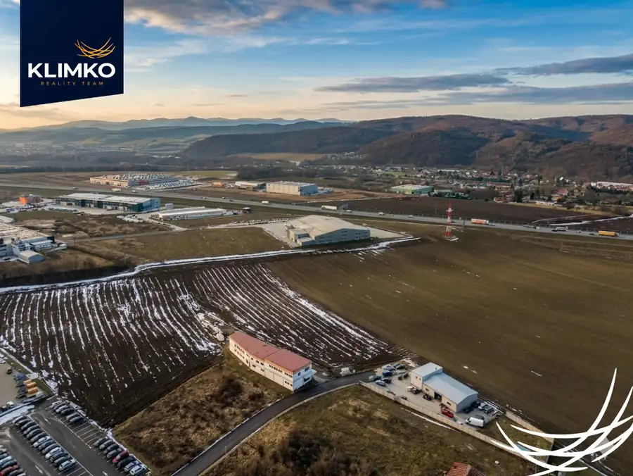
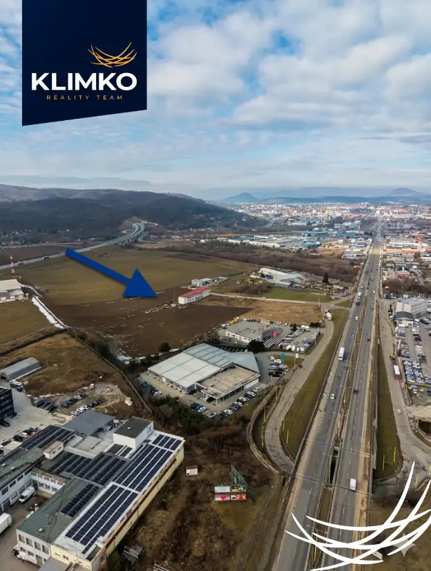

PREDAJ | Priemyselný Pozemok 7 910 M² | Všetky Siete | Prešov – Petrovianska
Prešov


- Plocha7910 m²
O nehnuteľnosti
Ponúkame na predaj lukratívny priemyselný pozemok s priamym napojením na diaľnicu, v jednej z najžiadanejších lokalít mesta Prešov, na ulici Petrovianska. Tento ucelený súbor dvoch parciel s celkovou výmerou 7 910 m² je pripravený na okamžitú výstavbu logistického, výrobného alebo obchodného centra. Prístup po panelovej ceste robia z tejto ponuky najlepšiu voľbu pre váš biznis v Prešove.TECHNICKÉ PARAMETRE A ROZMERY:Väčší pozemok (cca 5 000 m²): šírka 39 m (spodná) / 67 m (horná), dĺžka 97 m / 103 m.Menší pozemok (cca 3 000 m²): šírka 38 m / 39 m, dĺžka 78 m.VYBAVENOSŤ A INFRAŠTRUKTÚRA (Kľúčové výhody):Inžinierske siete: Na pozemku sa nachádzajú všetky potrebné siete (voda, plyn, kanalizácia).Trafostanica: Priamo na pozemku je umiestnená trafostanica, čo predstavuje obrovskú úsporu času a nákladov pri realizácii projektu.Dopravné napojenie: Okamžitý prístup na diaľničný privádzač (smer Košice, Poprad, Poľsko).Prístupová cesta: Bezproblémový prístup pre ťažkú nákladnú dopravu po stabilnej panelovej ceste.Právny stav: Prístup je garantovaný vecným bremenom práva prechodu a prejazdu zapísaným na LV.POTENCIÁL VÝSTAVBY (Podľa ÚPI):Pozemok spadá pod regulatív RL D.1, ktorý umožňuje:Index zastavanosti budovami až 80% (možnosť postaviť halu o výmere viac ako 6 300 m²).Zástavba bez výškového obmedzenia (ideálne pre moderné vysokokapacitné regálové sklady).Široké spektrum využitia: priemyselná výroba, sklady, logistika, administratívne centrá (ako dominanty areálu), obchodné prevádzky či ubytovanie pre zamestnancov.LOKALITA:Petrovianska ulica je strategickým južným vstupom do mesta, čo zabezpečuje vynikajúcu viditeľnosť pre váš showroom alebo sídlo firmy a rýchlu logistiku v rámci celého východného Slovenska.CENA: 135 € / m²Tento pozemok je ideálnou voľbou pre investora, ktorý hľadá hotové riešenie bez nutnosti zdĺhavého riešenia sietí a prístupov.Pre viac informácií, zaslanie územnoplánovacej informácie (ÚPI) alebo dohodnutie obhliadky ma neváhajte kontaktovať.Kontaktné údaje:Mgr. Pavol KlimkoRealitný maklérTel.: 0948 608 372E-mail: pavol@klimkoreality.sk
Parametre
- Druh
- Priemyselná zóna
- Dátum zverejnenia
- 27. 03. 2026
- Elektrina
- Na pozemku - 230 V
- Odpadové vody
- Pri pozemku - Kanalizácia
- Plocha pozemku
- 7910 m²
- Plyn
- Pri pozemku
- Pripravenosť k výstavbe
- Schválené v územnom pláne
- Terén pozemku
- Prevažne rovinatý
- Typ
- Predaj
- Voda
- Pri pozemku - Verejný vodovod